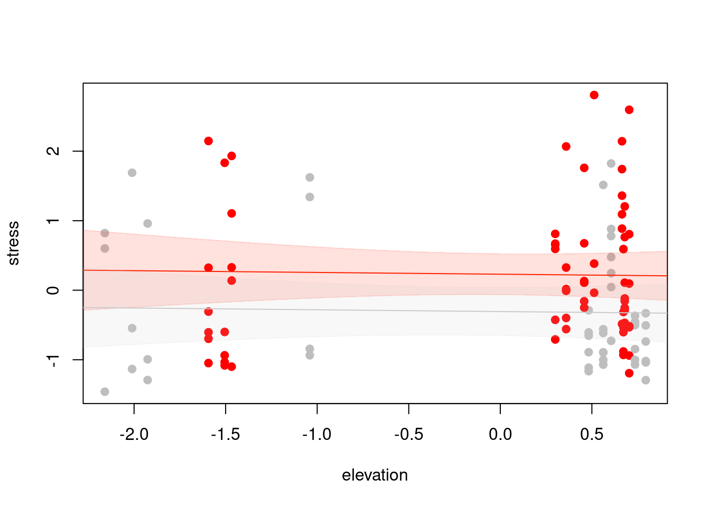
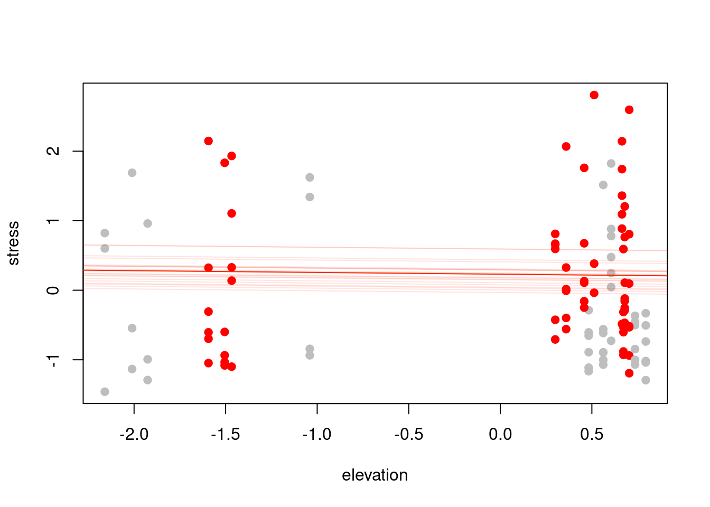

9 Mixed-effects models
Remember that one of the assumptions of linear models, and generalized linear models, is that our errors are independent from each other. In reality, this is rarely the case with ecological data.
9.1 Pseudoreplication
“Pseudoreplication is … use of inferential statistics to test for treatment effects with data from experiments where either treatments have not been replicated (though samples may be) or replicates are not statistically independent” - Hurlbert 1984
As an example of how to think about pseudoreplication, imagine that you’ve been asked to judge the quality of apples from different states to determine where the best apples are grown. The biggest apple growing states in the US, in order, are: Washington, Michigan, New York, Pennsylvania, California, Virginia, and Oregon. Each of these states can submit up to 50 different apple varieties from different growers in the state to give a full picture of the types and quality of apples grown. Independent growers in each state submit a random apple, and then these apples are packed up and shipped to you, the world expert on apple quality. You grab one at random from the shipment from Washington, and it tastes foul. You grab another one at random from the Washington shipment, and it also tastes foul even though it was submitted by a different, completely independent grower. Even as your sample size increases and you keep trying different apples, they all taste foul. When trying shipments from other states, you can taste differences between the apples and they seem to be a bit more ‘random’ than the Washington ones, though the ones from Michigan are more similar to each other than they are to the ones from California. Because the apples are shipped in the same barrel, a single rotten one affects the flavor of all of them, i.e. the apples are not truly independent replicates. Similarly, even though the other barrels are not contaminated, the apples in them still share some characteristics (e.g. similar climatic or soil conditions) that makes them not truly independent at the level of comparing apples across states. That last bit, that they are not independent at the level of your analysis is critical. If we were only interested in variation in apple quality within the state of New York and had independent growers randomly submit apples, then we would not have a pseudoreplication issue going through that barrel.
Put into more ecological terms, pseudoreplication occurs when you add more samples but they are not more replicates, i.e. just because you have 200 fish does not mean your sample size is 200 if those fish are divided evenly into 20 tanks of 10 fish each (i.e. your number of replicates is actually 20 tanks, not 200 fish).
How can we avoid pseudoreplication? The best thing to do is to plan ahead for it, and not be dealing with it after the fact. When planning your experimental design setup, think of the variety of ways that the environment (or other characteristics of your particular system) could lead to pseudoreplication or other confounding factors.

Firstly, you want to add more blocks not more repeated measures within blocks. Randomly assigning blocks is one approach, but a random assignment can sometimes end up interacting strangely with the environment and biasing your sample in unintended ways. A systematic design is another approach which avoids clumping that can sometimes happen with random assignment. But, your data could have other forms of dependence. A randomized block design is typically a pretty good approach because it has the advantages of being both systematic and random.
9.2 Dependence in error structure
More broadly than just pseudoreplication, it is worth thinking about what processes could result in dependence in errors (i.e. is there some other factor that could explain variation in residuals that is not in your model). Some common examples in ecology include:
Phylogenetic non-independence. Species with shared evolutionary history may be more likely to exhibit similar traits. For instance, if you wanted to know something about how body size in birds relates to their lifespan, so you sampled a hoatzin, a saltmarsh sparrow, a barnacle goose, a chickadee, and an albatross. The residuals for the saltmarsh sparrow and chickadee will likely be much more similar to each other than to other because they are both passerines.

Spatial autocorrelation. Things that are more similar in space often tend to be more similar in other ways. For example, plants grown on the same soil type, insects reared from the same population, chipmunks studied in the same forest fragment, etc. This also applies to lab environments, not just field experiments! For instance, you can end up with gradients in labs from drafts, distance to a fan, light gradients, etc.
Proximity in time. Similar to space, when you measure things near the same time point, they may be more similar. This does not necessarily need to be linear time! For instance, atmospheric CO2 concentration measured in 1961 and 1962 would be more similar to each other than when comparing 1961 to 2021, but also the concentration will be more similar between Northern Hemisphere summer of 2020 and summer of 2021, than between Northern Hemisphere summer and winter of 2021.

Measurement dependence. Sometimes you might also heard this referred to as observer bias, though it does not necessarily need to be an observer (e.g. it could also be an equipment or measurement device bias).

Same reagent or lab equipment. Samples processed with the same equipment, or at the same time (e.g. sending sequences off to be processed in a batch), can result in dependence if there is something different about that equipment or batch.

9.3 Consequences of ignoring dependence in errors
If we ignore dependence in errors, we will end up: 1) Overestimating test statistics, 2) Underestimating variance, and 3) Biasing parameter estimates, all of which means we may end up making errors when it comes to inference.
We will also incorrectly estimate the degrees of freedom for the model. Degrees of freedom are how many things are free to vary, though I find it is easier to think of them as the number of pieces of information we have to be able to fit our model, but we use one up every time we estimate something.
Calculating a mean uses one degree of freedom. Let’s say we have four numbers, and the mean is 7. Three of the numbers are free to vary. If the first number is 8, the second number can be whatever it wants (let’s say it is 14), and the third number can also be anything (let’s say -5). Because the first three numbers are now set, and we know the mean, the last number has to be 11.
## [1] 79.4 Dealing with dependence
Other than just ignoring it and knowing our results are likely wrong, there are two approaches to dealing with dependence in error structure: 1) we can include covariates that explain variation or soak up the noise, or 2) we can explicitly model the dependence.
The first approach is something we have already done, i.e. we have included group level differences in models already when estimating differences in diving depth of simulated lizards (i.e. adding in a categorical / dummy variable indicating if a lizard was black or orange), and also when modeling weight of bison when we had separate effects for age and sex. We could deal with dependence in our data in the same way.
Take the example of measuring bird wing chord. Let’s say we have four field technicians measuring bird wings, and we suspect that they each have a slightly different approach. Sam is careful to not flatten the wing at all so his estimates are slightly lower than if Frodo were to measure the same wing because he pushes it down slightly; Pippin tends to grab larger birds to measure, and Merry insists on using his own ruler which is in inches instead of centimeters and then does the back calculations to get the numbers. You could include four categorical variables to soak up the ‘noise’ associated with each of these technicians, so that birds measured by Sam all had a missing 0.2 centimeters explained, Pippin’s had an extra error correction, etc. Those coefficient estimates do not carry any real biological information, they are just accounting for nuisance.
Adding in extra categorical or dummy variables as a fixed effect is all well and good in terms of inference and interpretation of the model, but it comes at a cost - for each extra parameter that we estimate, we lose one degree of freedom. If we run out of degrees of freedom, then we cannot actually fit our model. If you have sufficient sample size and a small number of groups, that can be no problem, but what if you have dozens or even hundreds of treatment groups?
A random effect is one way to deal with dependence in errors. Instead of estimating a parameter for each group, you give each group some freedom to vary by assuming it is drawn from some distribution centered at the mean across groups with some standard deviation. Each random effect, then, is drawn from that distribution. We only have to estimate the standard deviation of the distribution, so it uses far, far less degrees of freedom than if we were to explicitly model each group as a fixed effect. Random effects can take the form of random intercepts (i.e. an offset for each group, like with the lizard color morphs except not explicitly estimated) or random slopes where each group is allowed to have a slightly different response to a covariate.
Beware of Simpson’s Paradox when dealing with random effects. Simpson’s Paradox occurs when the direction of the effect of a predictor on a response is different when looking within groups compared to between groups. If you’ve been listening to Quantitude, you might be familiar with the example of the effect of body size on lifespan in animals. In general, the bigger an animal is, the longer it lives. Elephants live longer than dogs, which live longer than mice, etc. If you fit a model predicting longevity as a function of body size at the species level, you would end up with a positive relationship.

But within a species, smaller individuals tend to live longer. Small dog breeds, for example, live longer than large breeds. So depending on the level of your analysis you would reach very different conclusions about how body size impacts lifespan, which is Simpson’s Paradox.

9.5 Pika stress example
Let’s revisit our stressed out pikas from earlier in the semester. Fecal samples were collected at different sites associated with different stations along an elevational gradient. Look through the data files again (…including the Notes field) and come up with some different factors that could lead to dependence in the errors.
dat <- as.data.frame(readxl::read_xlsx("~/Downloads/pika_stress.xlsx", sheet=1))
metadat <- as.data.frame(readxl::read_xlsx("~/Downloads/pika_stress.xlsx", sheet=2))
dat$elevation <- metadat$Elev_M[match(dat$Station, metadat$Station)]
dat$elevation <- as.numeric(scale(dat$elevation))
dat$stress <- dat$Concentration_pg_g
dat$stress <- as.numeric(scale(dat$stress))
dat$male <- as.numeric(dat$Sex=="M")One of the packages in R that we can use to fit mixed effects models is called lme4. The syntax for specifying random effects is:

mod1 <- lme4::lmer(stress ~ elevation + male + (1 | Station), data=dat)
mod2 <- lme4::lmer(stress ~ elevation + male + (1|Plate/Station), data=dat)Why are there no p-values? [add explanation]!!!!!!!!!!!!!!!!!! Getting confidence intervals can be done via bootstrapping instead.
xvals <- seq(-2.5, 1, 0.1)
pred1.m <- predict(mod1, newdata=data.frame(elevation=xvals,
male=1),re.form=~0, se.fit=T)
up.ci.m <- pred1.m$fit + 1.96*pred1.m$se.fit
low.ci.m <- pred1.m$fit - 1.96*pred1.m$se.fit
pred1.u <- predict(mod1, newdata=data.frame(elevation=xvals,
male=0),re.form=~0, se.fit=T)
up.ci.u <- pred1.u$fit + 1.96*pred1.u$se.fit
low.ci.u <- pred1.u$fit - 1.96*pred1.u$se.fit
plot(stress ~ elevation, data=dat, col=c("grey", "red")[dat$male+1], pch=19)
lines(pred1.m$fit ~ xvals, col="#ff2200")
polygon(x=c(xvals, rev(xvals)),
y=c(low.ci.m, rev(up.ci.m)),
col="#ff220022", border="#ff220022")
lines(pred1.u$fit ~ xvals, col="#cacaca")
polygon(x=c(xvals, rev(xvals)),
y=c(low.ci.u, rev(up.ci.u)),
col="#cacaca22", border="#cacaca22")
# What about our random effects?
stations <- unique(dat$Station)
plot(stress ~ elevation, data=dat, col=c("grey", "red")[dat$male+1], pch=19)
lines(pred1.m$fit ~ xvals, col="#ff2200")
for(i in 1:length(stations)){
pred.tmp <- predict(mod1, newdata=data.frame(elevation=xvals,
male=1, Station=stations[i]))
lines(pred.tmp ~ xvals, col="#ff220020")
}
9.6 Shrinkage
The random effect we added for Station is at the level of Station, because remember we are only estimating the standard deviation of the distribution from which deviations by groups are drawn. Each level of our grouping factor (i.e. CG1, CG2, etc.) has its own ‘Best Linear Unbiased Predictor’ drawn from that distribution, more commonly called BLUPs because it is fun to say. BLUPs are the individual predicted differences, i.e. the result of adding a random effect for Station means each station has a different BLUP.
They are not estimates because we did not estimate parameters, hence why they are called predictions. They rely on data from other groups to fit the overall random effect, which means that groups with small sample size have BLUPs that are more influenced by the population mean than large groups. BLUPs tell us how much the parameter for each group differs from the population mean, i.e. in the case of a random intercept, how much each group’s intercept is above or below the mean intercept.